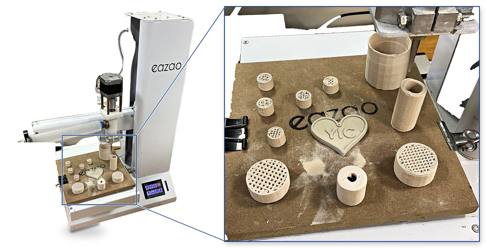

ZR‑1A
More clay. Compare with ZR‑2A.
- Mix
- 70 % ZSM‑5, 30 % clay (14 g + 6 g)
- Infill
- 80 %
We 3D‑printed a catalyst from ZSM‑5 zeolite and red bentonite clay. Then we tested how much propylene it makes from n‑heptane.
Propylene is used to make plastics. The world needs about 4–5 % more of it every year, and supply is not keeping up.[1]
ZSM‑5 is a catalyst that helps make more propylene when hydrocarbons are cracked. It is usually used as a powder or as small random pellets. Then the gas does not flow evenly, the pressure drop is high, and some propylene breaks down further into ethylene and dry gas.
Our idea: 3D‑print the ZSM‑5 into a piece with open channels,[5] using a clay printer,[2, 3] and compare it with the same ZSM‑5 used as crushed grains.
All three have the same shape: a cylinder 11.3 mm wide and 15 mm tall, with two round walls, a grid inside (45°) and four zigzag bands (22°). We changed one thing at a time. ZR‑1A and ZR‑2A have different amounts of clay. ZR‑2A and ZR‑2B have a different infill (how full the inside is).
More clay. Compare with ZR‑2A.
Used in both comparisons.
Less infill. Compare with ZR‑2A.
Layer drawings made from our Cura print settings (1.2 mm lines, grid at 45°, zigzag at 22°).
We also tested, the same way: the parent ZSM‑5 (the same zeolite, not printed: pressed at 8 t for 1 min, crushed and sieved to 250–350 µm), red bentonite clay alone (baked, crushed, 250–350 µm) and an empty tube with no catalyst.

ZSM‑5 powder (SiO₂/Al₂O₃ = 23), red bentonite clay and water. We mixed and kneaded it, then let it rest for 2 days.
Eazao clay printer, 1.2 mm nozzle, 1 mm layers. Top and bottom are left open so gas can pass through.
48 hours in air.
Heated at 3 °C per minute to 650 °C, kept there for 3 hours, then cooled in the furnace (calcination). The pieces come out about 11 mm wide and 12 mm tall.
We tested every catalyst in the same setup. Tap each part to see it.
Propylene share of the products, ZR‑2B at 500 °C
The parent ZSM‑5 (crushed grains) gave 24.3 % under the same conditions.
Propylene share (selectivity): mol % of the products, not counting unreacted n‑heptane.
Pick what to compare and a temperature.
What came out at 500 °C (mol % of the products).
Shares are mol % of the products (unreacted n‑heptane not counted). Conversion = 100 − n‑heptane mol % in the outlet gas. TLO = total light olefins (ethylene + propylene + butenes). Dry gas = methane + ethane. BTX = aromatics. P/E = propylene/ethylene. O/P = olefins/paraffins in the products. CMR = (C₁ + C₂ + ethylene)/i‑butane. n/a: no ethylene or no i‑butane peak. Each sample was tested at 500, then 550, then 600 °C, about 10 min after reaching each temperature. Moles come from GC peak areas, calibrated with a standard gas of 7 known gases.
Senior Design Project, Group 1, 1st semester 2026/2027. Department of Chemical Engineering, Yanbu Industrial College.
Our GC result: ZR‑2B at 500 °C
Our GC measured the gas from every test. Pick a catalyst and a temperature, and the molecules change to match our results.